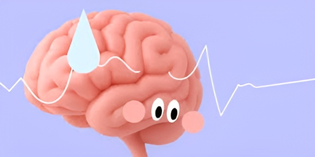
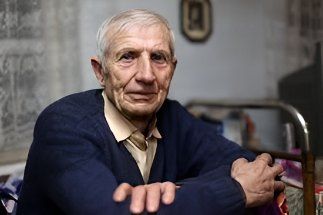
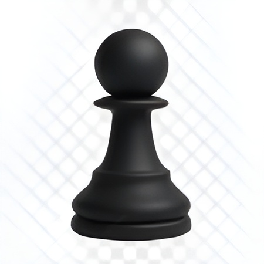
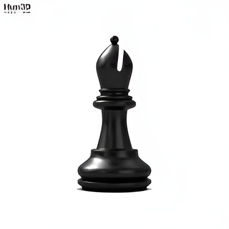
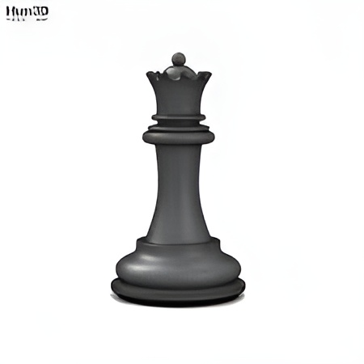

Шахматы полезны, так как они развивают когнитивные способности: улучшают
память, логику, стратегическое мышление, концентрацию внимания и
способность решать сложные задачи. Игра тренирует мозг, способствуя
образованию новых нейронных связей, что помогает сохранять ясный ум в
старости, а также воспитывает терпение и стрессоустойчивость.

Почему полезно играть в шахматы?
Улучшается память. Успешные шахматисты имеют отличную память – все
благодаря тренировкам с запоминанием ходов, комбинаций и прошлых
ошибок, которых следует избегать.
Исследование про развитие памяти играя в шахматы

Шахматы помогают детям быстрее и качественнее освоить навык чтения.
Согласно исследованию доктора наук Стюарта Маргулиса, школьники,
состоящие в шахматных клубах, показывают лучшие результаты в чтении.
Это связано с общим развитием интеллектуальных способностей и
повышением самооценки.

С помощью шахмат можно научиться планированию. Поскольку шахматы
требуют от игрока стратегического и критического мышления, шахматистам
проще принимать правильные решения, которые в будущем принесут им
пользу.
Развиваются социальные навыки. Общение с оппонентами, тренерами,
организаторами турниров - все это помогает лучше чувствовать себя
среди незнакомых людей, особенно на офлайн турнирах.
Благодаря занятию шахматами во взрослом и пожилом возрасте, снижается
риск таких заболеваний, как деменция и синдром Альцгеймера. Наш мозг
нуждается в тренировках так же, как и тело. Шахматы - отличный способ
держать его в тонусе.

Шахматные фигуры
Шахматные фигуры - главные действующие лица любой шахматной партии.
В шахматах шесть видов фигур. Это король, ферзь, ладья, слон, конь и
пешка.
Пешка
Пешка- cамая слабая шахматная единица (её не принято считать
фигурой) и основная единица измерения шахматного материала: в
пешечном эквиваленте измеряют «вес» фигур. Ходит по вертикали на 1
клетку, (на 2 клетки в начале партии) Рубит по диагонали на 1 клетку

Конь
Конь - шахматная фигура, расположенные рядом с ладьями - белые кони b1
и д1, чёрные b8 и д8 ходит и рубит траекторией, похожей на русскую
букву «Г»

Слон
Слон - шахматная фигура. Игроки начинают игру с двумя слонами. В
начале партии белые слоны занимают поля с1 и f1, черные - с8 и f8.
Перемещается либо только по белым полям, либо только по чёрным. Ходит
на любое число полей по диагонали, при условии, что на его пути нет
фигур.

Ладья
Ладья - является тяжёлой фигурой, примерно эквивалентна 5 пешкам, а
две ладьи равны ферзю. Белые ладьи в начале партии занимают поля а1 и
h1, чёрные - а8 и h8. Ходит и рубит на любое число полей по
горизонтали или по вертикали при условии, что на её пути нет фигур.

Ферзь
Ферзь - Самая сильная шахматная фигура. В начале игры белый ферзь
занимает поле d1, а чёрный - d8. В начальной позиции ферзь всегда
занимает клетку своего цвета, отсюда и выражение: «Ферзь любит свой
цвет». Ходит на любое число полей по вертикали, горизонтали или
диагонали - соединяет в себе ходы ладьи и слона г 0

Король
Король - самая главная фигура шахматной партии, и самая уязвимая. Если
королю поставлен мат (то есть у короля нет возможности пойти, и ему
шах), то шахматная партия заканчивается. Особенность - может
участвовать в рокировке с ладьей Он может ходить (и рубить фигуры
противника) только на соседнее поле в любом направлении

Как начать новичку
купить доску или скачать приложение
скачать приложение для шахмат
выучить, как ходят фигуры
Полезное видео
сыграть первую партию — даже с компьютером
Призыв к действию
Начни прямо сегодня — поставь первую цель: выиграть у компьютера на
лёгком уровне
Пример турнирной таблицы
| Место |
Игрок |
Очки |
Партии (Побед / Ничьих / Поражений) |
| 1 |
Каспаров |
7.5 |
5 |
2 |
1 |
| 2 |
Карпов |
6.0 |
4 |
2 |
2 |
| 3 |
Фишер |
5.5 |
3 |
3 |
2 |
Хочешь получать шахматные советы?